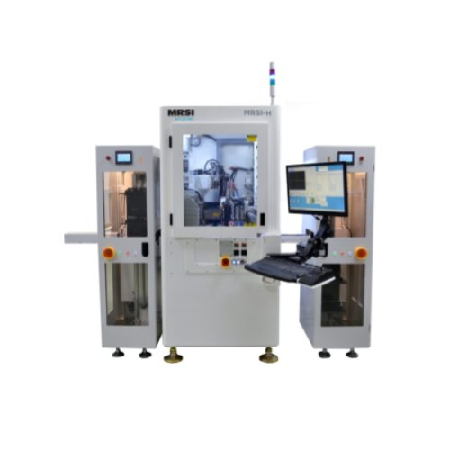

1.5um黏晶機
產品型號：MRSI-H
- MRSI-H系列為真正的多晶片、多工藝、多產品大批量高混合生產提供了被驗證了的卓越的靈活性。這些高速產品提供業界領先的速度，而不犧牲靈活性，精度或可靠性。MRSI-H系列是應對5 g無線網絡的推出和高增長的高功率半導體激光二極管(HPLD)市場帶來的製造業的挑戰。根據應用，MRSI將H系列重新分類。
產品型號：MRSI-H-LD
- 該標準系統廣泛應用於先進的光子學領域，如激光器、接收器、收發器、照明和傳感器等。
- 攜帶有經過現場驗證證的靈活和高速MRSI-HVM平台上的關鍵技術構建模塊。
- 加熱頭的選擇項是為高密度共晶封裝而設計的
- 「運行中」自動更換工具模塊可在黏晶頭上集成十二個真空吸嘴或蘸頭，實現零時間工具切換。
產品型號：MRSI-H-HPLD
- 專為大批量生產的大型高功率雷射二極管黏晶而設計
- 能夠在一台機器內對不同封裝的單管器、Bar條雷射器進行黏晶，如CoS、C-mount、bar條到基板(BoS)等。
- 客制設計的自平衡工具可有效解決共面性問題
產品型號：MRSI-H-LDMOS
- 特別設計用於大規模生產射頻功率放大器和微波器件，可應用於GaAs, Si, GaN, SiC的黏晶。
- 可編程的摩擦貼片過程可實現無空洞的粘片
- 內聯加熱器，傳送帶和上/下料機的選項，可以提高設備的UPH MRSI-H-TO。
- 專為處理多芯片和多工藝複雜TO產品而設計，無需機器切換。例如：面向5G的EML和WDM的TO產品。
- TO處理模塊可結合取放頭進行並行處理
- 環氧樹脂和共晶貼片可在同一工藝流程中實現
對客戶的價值
- 行業領先的出貨量，卓越的靈活性，更多的工藝選項，和大批量高混合製造中超高的精度。
- 通過在5微米和1.5微米模式之間自動切換，可以在一台機器內平衡不同精度的晶片封裝，為客戶提供最佳的生產能力和投資回報率。
- Windows™平台上運行的基於圖標的軟件界面，易於使用，便於編程和低成本維護。
- 行業領先的本地技術支持團隊和應用專家
- 超過35年的行業經驗保證了設備全天候可靠運行